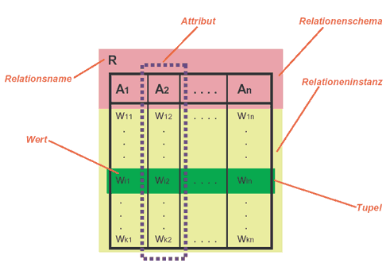
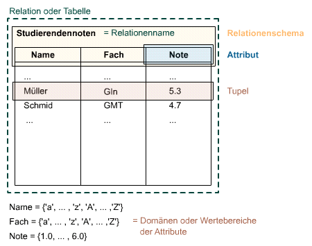

Das relationale Datenmodell
Datenbanksysteme können auf verschiedenen Datenmodellen bzw. Datenbankmodellen basieren. Ein Datenmodell ist eine Ansammlung von Konzepten und Regeln zur Beschreibung der Struktur einer Datenbank. Dabei verstehen wir unter der Struktur einer Datenbank die Datentypen, Bedingungen und Beziehungen zur Beschreibung bzw. Speicherung der Daten. Solche auch logisch genannten Datenbankmodelle betrachten keine abstrakten Gegenstände oder Gegenstandstypen, sondern nur deren konkrete, datentechnische Umsetzung. Das Ziel der logischen Datenmodellierung ist das Anordnen der zu speichernden Informationen mit Hilfe eines Modells, das eine möglichst redundanzfreie, konsistente Speicherung unterstützt und geeignete Operationen für die Datenmanipulation zur Verfügung stellt. Das inn GI-Systemen wichtigste Datenbankmodelle ist das Relationenmodell.
Die effiziente Arbeit mit relationalen Datenbanken erfordert ein grundlegendes Verständnis von Relationen. Für die Praxis ist weniger die mathematische Theorie von Bedeutung als vielmehr das Verständnis der Begriffe und und Werkzeuge zur Schaffung und Bearbeitung von strukturierten Datenbeständen, da sowohl das Anlegen und Modifizieren als auch abfragen, identifizieren und manipulieren über die Grundelemente Tabelle, Feld, Datensatz, Wert und Verbindungen der jeweiligen Merkmalsausprägungen erfolgt.
Generell gewährleisten auch GIS-Datenbankstrukturen die logische, konsistente und geordnete Speicherung und Verwaltung der Daten, wobei anders als in "normalen" Datenbanken sowohl geometrische als auch thematische Angaben in tabellarischer Form vorhanden sind. Unter dem Begriff Editieren versteht man in GI-Systemen alle für die Anlage und Erfassung von Daten und Geometrien notwendigen Operationen (DDL/DML). In der Datenauswertung werden Abfragen, Analysen usw. auf den vorhandenen Relationen durchgeführt (DML).
Wir haben das Relationenmodell als logisches Datenmodell bereits kennengelernt. Die grundlegende Organisationsform der Daten im relationalen Datenbankmodell ist die mathematisch aufzufassende Relation. Eine Relation besteht aus Attributen (Merkmale der abgebildeten Objekte) und Tupeln. Sogenannte normalisierte Relationen können durch zweidimensionale Tabellen leicht verständlich dargestellt werden. Dabei entspricht jede Zeile dieser Tabelle einem Tupel. Die möglichen (erlaubten) Werte eines Attributs nennen wir seinen Wertebereich (Domäne). In einer tabellarischen Darstellung sind alle Attributwerte (Spalte) im Wertebereich des Attributs enthalten. Die formale Zusammenfassung der Attribute die ein Tupel ergeben wird Relationenschema genannt.

Beispielhafte tabellarische Darstellung einer Relation und der verwendeten Begriffe (GITTA 2005)Es sind im zwei Gründe, die trotz einiger Nachteile den nachhaltigen Erfolg des Relationenmodell als logisches Datenbankmodell ausmachen:
- Einfachheit: Die gesamte Information einer relationalen Datenbank wird einheitlich durch Werte repräsentiert, die mittels eines einzigen Konstrukts (nämlich der „Relation“) strukturiert sind.
- Systematik: Das Modell besitzt eine fundierte mathematische Grundlage – die Mengenlehre.
Wir wissen dass das relationale Schema eines Gegenstandes (Entität) als Tabelle (Relation) abgebildet werden kann. Verdeutlichen Sie sich anhand des nachfolgenden Beispiel „Studierendennoten“ die Verwendung der Begriffe. Das von der Entität abgeleitete Relationsschema wird mit den Attributen Name, Fach und Note beschrieben. Der Wertebereich der Attribute Name und Fach sind alle Groß- und Kleinbuchstaben des Alphabets (Datentyp character), die des Attributs Note sind Zahlen von 1 bis 6 mit einer Kommastelle (Datentyp real). Wenn nun Inhalte in die Relation eingefügt werden, dürfen für die Merkmalsausprägungen nur Werte aus dem Wertebereich verwendet werden. Das resultierende Tupel sind die zusammengehörenden Werte verschiedener Attribute (Instanz des Relationsschemas). Es entspricht in der Tabelle einer Zeile (Datensatz).

Die Begriffe des relationalen Datenbankschemas im Kontext des implementierten relationalen Datenschemas S"tudierendennoten" (GITTA 2005)Exkurs Relationen (Klicken Sie hier für mehr Informationen)
Bearbeiten Sie...
- Benennen Sie Beispiele für Relationale Datenbanken aus ihrem Alltag